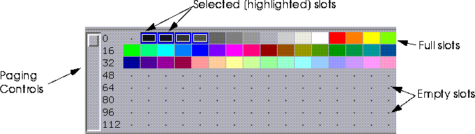

Most game platforms are limited in the number of colors they can display. N-Paint acknowledges these restrictions, and includes powerful tools for reducing the number of colors in an image without sacrificing detail or overall image quality. Color reduction changes full-color images to color mapped images.
In this chapter, we'll cover:
In this Chapter
Color reduction is the process of mapping the colors in one image to a palette which contains a smaller number of colors. It is an important feature of N-Paint, since many game platforms are limited in the number of colors they can display. Before color reduction, each pixel might require as many as four bytes for color definition (in the case of a 64-bit, four-component image). In a color reduced image, each pixel's color is defined by a pointer 1 byte or less in size, reducing by over 75% the amount of memory needed to store color information.
Color Reduction
How Color Reduction Works
The first step in the color reduction process is to create a histogram portraying the relative frequency of given RGB values in terms of the number of pixels which have these values. RGB colors are defined by three values, but to illustrate the concept we'll consider a grey scale image, where "color" is really just a shade of grey, and is represented in memory by a single (or one dimensional) intensity value. Specifically, we'll take a 5-bit grey scale image, whose pixels have one of 32 different intensities, or "shades of grey", and reduce it to a 2-bit (4-color) image.
To create the histogram, the algorithm first assigns each pixel to one of 4 groups (one group for each color "slot" in the reduced palette). Each "group" must contain the same quantity of pixels, so if our image contains 10,000 pixels (as would an image 100 x 100 pixels in size) then each group contains 10,000/4, or 2500 pixels. Figure 7.2 shows the resulting distribution of groups:
The next step is to determine the weighted average intensity value for each group. These values translate directly to slot values in the reduced palette, as shown in Figure 7.3.
The Reduced Palette
The reduced palette (which is called a Color Lookup Table, or CLUT) itself consists of a predefined number of slots. Each pixel in the reduced image has a pointer value which references one of these slots. The slots themselves are arranged according to a specific index, determined by the color-reduction algorithm. You can perform operations on the slots in the palette, including sorting them by their color values, deleting, or inserting slots. When you do this, however, the values referenced by each pixels pointer can change, resulting in changes in the appearance of the image.
(CLICK-L) on the Color Reduction button in the Paint Modes menu to enter Color Reduction mode.
Using Color Reduction
File Operations
You can perform file operations using the magenta Image edit field. (CLICK-L) on the Image field to reveal the Image Operations pop-up menu. Table 7.1 summarizes each of these operations.
Saving Reduced Images and Palettes
When you (CLICK-L) on Image>Save Reduced Image, you can choose between one of three color-mapped image formats:
Palette Operations
The current palette is displayed in the central portion of the Color Reduction menu. Several controls in this area provide ways for you to manage this palette, or select another palette.
Palette
You can use this field to select from among those palettes currently loaded into memory, or to perform several palette operations. (CLICK-L) on the Palette edit field to reveal the Palette Operations pop-up menu:
Size
The size of the palette refers to its size in bits. The essence of color reduction lies in reducing the size of a palette. When a large palette is reduced in size, N-Paint's color reduction algorithms can calculate a new palette which provides a "best fit" for the colors in the original palette.
(CLICK-L) on the Size field to reveal the Choose Palette Size pop-up menu
Slot
This field shows the currently selected slot. The value to the right are the RGB values for the color stored in that slot. You can edit these values directly if you choose.
BPG
Bits per Gun. This field controls the depth of each color in each slot of the palette. By default, this is set to 8 bits each for the R, G, and B channels (symbolized RGB 888).
Using the Palette Menu
The current palette is displayed in the central portion of the Color reduction menu.

Manipulating Slots
You can manipulate slots directly with the mouse:
Figure 7.7 The Edit Selected Slots(s) pop-up menu
Figure 7.10 The Sort By pop-up menu
The Scratch Palette
The Scratch Palette serves as a permanent clipboard. You can cut or copy colors from slots in the current palette, then paste them onto the Scratch Palette. You can't save the scratch-palette, nor can you apply it to an image.
Color Reduction Operations
The right side of the color reduction menu contains the controls you'll use to specify images to reduce, and also to execute color reduction operations on the current canvas.
Image
(CLICK-L) on this field to select an image file from those currently loaded into memory, and load it onto the canvas.
Target
Each game platform has unique gamma correction and gain values for each color component. You can choose from between several predefined platforms, or define your own. (CLICK-L) on this field to select a platform from a pop-up menu:
Figure 7.12 Create New Platform dialog
Display
You can view either the original, full-color image, or the image as it appears with colors mapped to the current palette. To select a view, (CLICK-L) on one of the buttons in the Display section of the Color Reduction menu.
Dithering and Matte Options
You can control how N-Paint dithers images, as well as control the matte from the Color Reduction Menus.
Dithering
When toggled, automatically dithers the colors on the canvas as they are remapped. Enter a number between 0 and 1 to control the level of dithering applied to the canvas.
Matte
Controls whether the matte is used to control which areas of the canvas are affected by the Color Reduction operation. (CLICK-L) on the Matte toggle to activate the matte.
Matte Display
The Matte Display button brings up the Matte Display pop -up menu. You can use this menu to change the appearance attributes of the matte (color, tranparency, etc.). The behavior of these options is exactly the same as for the Matte Display button in the Tools menu. To review these options, see "Display," on page 3-5.
Oper
(CLICK-L) on the Oper (operations) field to reveal the Color-Reduction Operation menu:
1. Select the operation from the Color-Reduction pop-up menu.
2. Configure the parameters for that operation.
Color Reduction Operations
Set Palette Slots & Remap
This operation generates the color histogram for the selected area (see "Canvas" below), sets the selected slots (see "Slots" below) to these color values, and then remaps the colors on the canvas to match those in the newly generated palette.
Shapes
N-Paint remembers shapes that you define when you use the Rect or Poly options to define a canvas area. When these canvas options are selected, four new commands are available next to the Do It button:
Remap Canvas to Palette
This operation remaps colors on the canvas using the current palette. Unlike the Set Palette & Remap operation, it does not generate a new palette based on the canvas first.
The parameters for this operation are identical to those described above.
Histogram Operations
Set Palette Slots & Remap Canvas and Remap Canvas to Palette create a new histogram each time they are invoked. Sometimes, though, you'll want to build a histogram and reduced palette from more than one image. For example, you may wish to create your histogram from a series of number image files in an animation. You can use histogram operations to build such a cumulative histogram.
Clear Histogram
This operation deletes the current histogram from memory.
Add Colors to Histogram
This operation adds pixel color/population information to the current histogram, and automatically recalculates the weighted average for each group.
Set Palette Slots from Histogram
Sets selected palette slots from values in the current histogram.
Palette Operations
Each pixel in the reduced image is mapped to a slot in the reduced palette. These slots can be sorted or rearranged by a variety of operations. This can result in unpredictable changes in an image's appearance.
Reorder Image Indexes
Redirects pointers from their current slot to the slot which contained the color they pointed to originally. This original state is reinitialized by Reset Index History. You'll need to perform this operation if you move slots from their original positions.
Reset Index History
Redefines base state for pointer assignments. After you reset Index history, Reorder Image Indexes returns to this new order.
Copyright © 1996, Nichimen Graphics Corporation. All rights reserved.